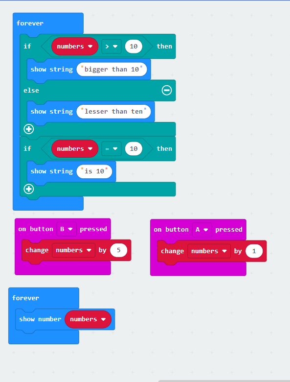
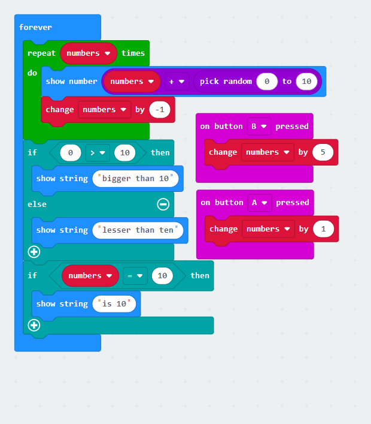
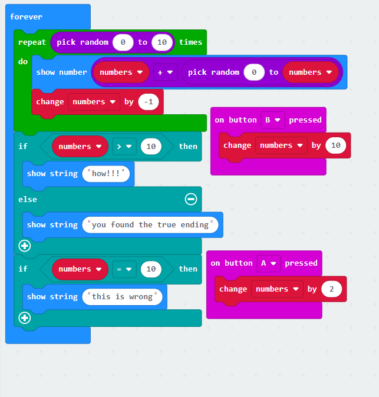
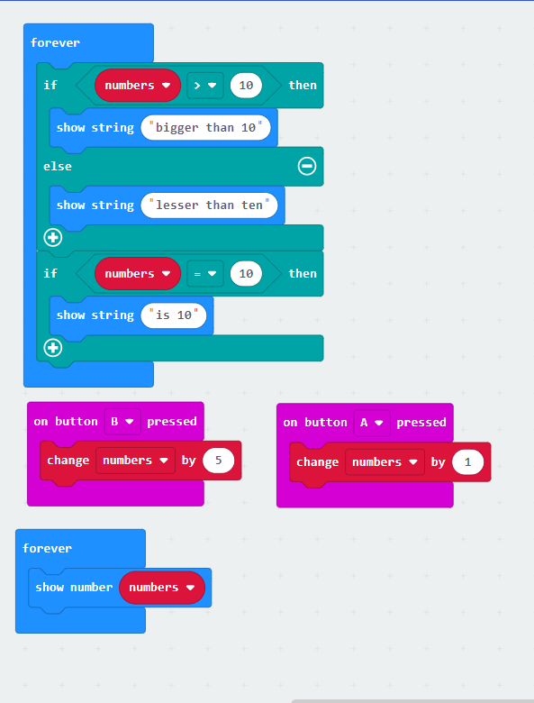
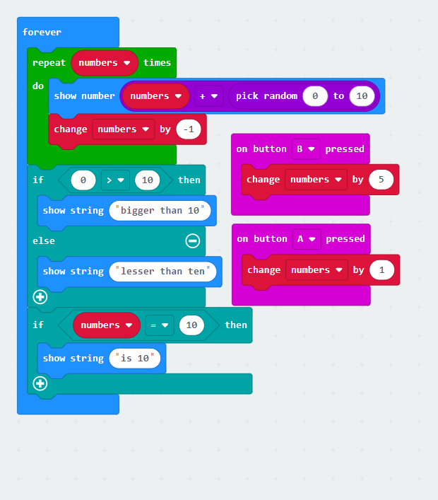
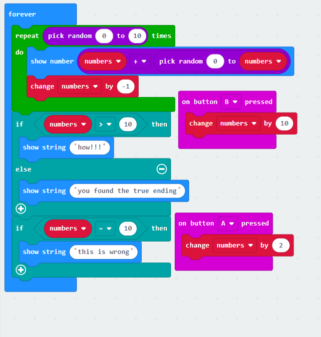

| Microbit teaching and learning |
| Home | Microbits | blank |
|
 





This is a lesson for beginners. The key things that you will learn is about basic code that works on its own. The main image above is using a forever statement meaning whatever is in it will happen forever. Then you have the show tags which can show numbers, strings(words), images, arrows and icons. These are normally used when you want to get the micro bit to show something. If you want to make a sequence of images or words that happen after another like the image to the left you would put them in order being the one you want first at the top as it reads up to down. The last basic here is the pause block that is used to delay an action that can be seen in all three of the images for beginners. It can be used to make sure there is time for something to happen like in the left image it gives people 5 seconds to think of the answer to 10 times 10. If you want to teach someone who knows nothing you should just get them to play around with the basic code section like these images.

This is a lesson for intermediates. The key thing you will learn is how to use inputs and how they work. All the intermediate images are using inputs to make a response. The big difference from basic code is it happens automatically but inputs require an external queue to do something. There are many different inputs for the micro bit. There are ones for the a and b button and some for pushing them at the same time then all the other inputs are motion triggered. The motion triggered ones could be used for counting your steps as the movement of your leg could increase a number or could give a message if you orientate it right. Whereas the a and b will be more common for things that you want control over like if you made a mini space invader meaning that you should pick the kind of input you want wisely. If you want to teach someone who wants to interact with what they code you should get them to play around with inputs like my images.

This is a lesson for advanced learners. The key things you will learn is how to use logic blocks and variable blocks and how they work. All the advanced images are using all the blocks from the other lessons but are also using variables and if statement blocks. Variables are used to make a name for something that is normally a number and it makes it so that you can have it hold that number and increase it as if you look at the image above it is keeping track of the step number. This is normally used when you want to track a number that you want to change. The if blocks are used to make it that if something is true then what's in the if statement will happen. Mine are all using a variable but they don’t need to; they could just be if 1 is greater than 2 then do this. This is often used to make it that there are different outcomes to something and that changing something has an effect. If you want to teach someone who wants to make something that tracks something and has messages at certain numbers then you should get them to experiment with the if statements and maybe have two different variables that’s numbers are changing.
This is a lesson for experts. The key things you will learn is how to use loop blocks and math blocks and how they work. All the expert images use loop and math blocks and a mix of everything from all the other lessons. Loop blocks are normally used to make something repeat itself for a certain amount of time. This can be seen with the while loop in the image above because as long as minutes is higher then 60 it will run everything in that while. This is normally used to make it that only certain blocks of code are running at once. It can also be used to limit the amount of code that has to run. The math blocks are used to do math equations. If you look at the image above then you can see that I used the math block to divide minutes into hours and used this to make a new variable called hours. This makes it that your code can be a lot more complicated because it opens up the ability of doing complex calculations. Math blocks would normally be used to make complex calculations or to change something by a certain thing. If you want to teach someone who wants to challenge themself then get them to try to make things using math blocks and while loops like the image above and also try to get them to make something different from what has been done here as that will help them grow.
gap